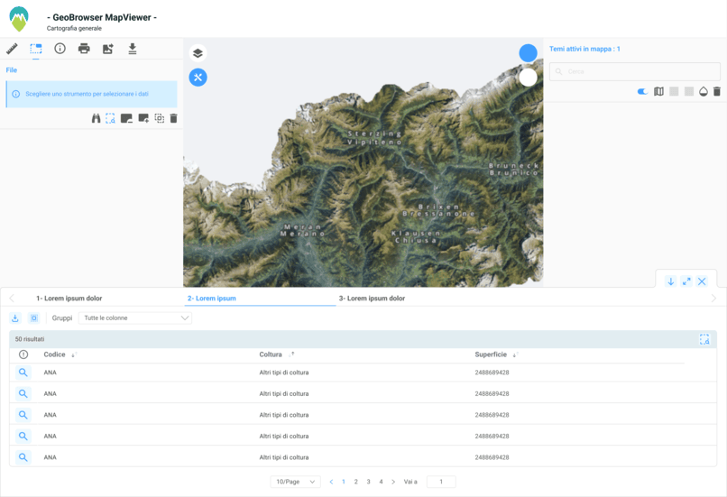
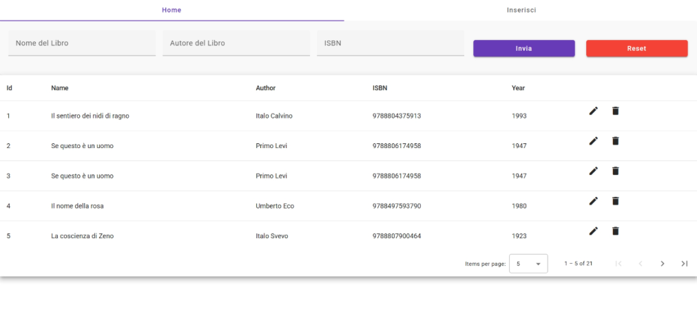
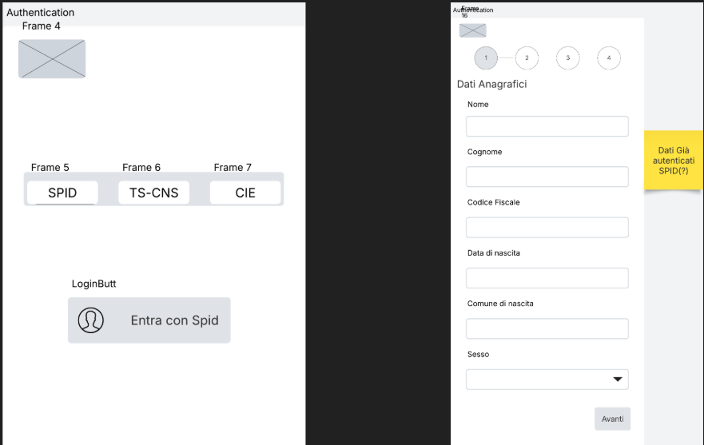
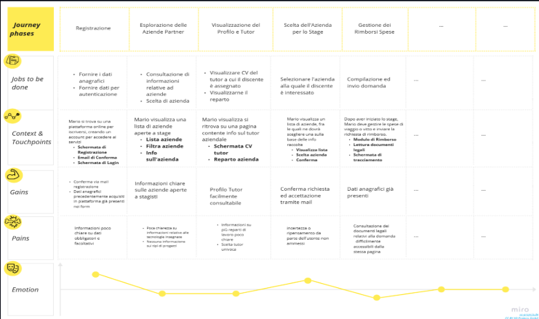

Giovanni Ferrante
UX Design Passionate
UX Design Passionate
Ciao! Sono Giovanni, un appassionato di UX design. Dopo aver frequentato L'ITS Web&Mobile Specialist, ho toccato con mano sia il lato full stack, che la progettazione dell'esperienza utente.

App di monitoraggio e gestione energetica domestica
Infografica realizzata con il team di ADT Digital Experience per L'istituto Centrale per la Digitalizzazione del Patrimonio Culturale
Lavoro di UX UI svolto con il team digital Experience di almavaiva ed il team di sviluppo volto all'aggiunta di funzionalità e miglioramento della user experience.
Progetto Full stack svolto in angular 15 & Spring per la gestione di un inventario libri.
Lavoro di analisi di possibili interfacce da implementare in un portale pensato per “CityZ", discutendo con analisti funzionali ed esperti di marketing.
Lavoro di analisi di possibili interfacce da implementare in un portale pensato per gli stagisti dell'ITS Web&Mobile Specialist + Empathy Map.